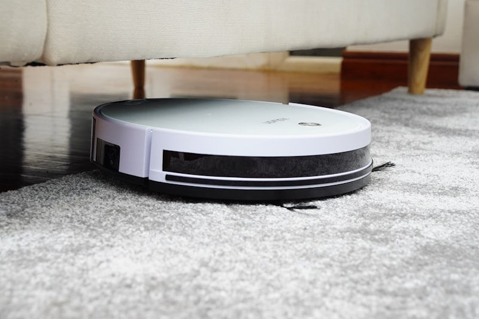

Aspirateur balai : lequel choisir sans se faire piéger par le marketing ?
Autonomie, puissance, poids, brosse, poils d'animaux, appartement ou maison : le guide d'achat simple pour choisir un aspirateur balai utile.

Photo : Unsplash
L'aspirateur balai est devenu un achat ultra courant, mais aussi un terrain parfait pour le marketing flou. Entre les watts mis en avant, les accessoires "offerts", les annonces d'autonomie énormes et les promesses de puissance absolue, beaucoup de gens paient trop cher pour un appareil pas si pratique au quotidien.
Le meilleur aspirateur balai n'est pas forcément le plus puissant sur la fiche produit. C'est celui que tu as envie de sortir sans réfléchir. S'il est trop lourd, trop bruyant, trop vite déchargé ou pénible à vider, tu le prendras moins souvent. Et un appareil qu'on n'utilise pas n'a aucune valeur, même acheté en promo.
💰 Active le cashback iGraal avant d'acheter.
Ce qu'il faut vraiment comparer
Le premier critère, c'est le poids. Un aspirateur balai doit être pratique. Si tu le sens lourd après deux minutes, il va vite t'agacer. Le deuxième critère, c'est l'autonomie utile, pas l'autonomie théorique en mode éco. Ce qui compte, c'est de savoir s'il peut nettoyer ton vrai espace sans stress.
Le troisième point, c'est la brosse principale. Si tu as des tapis, des animaux, des cheveux longs ou beaucoup de poussière fine, la tête d'aspiration et l'entretien de la brosse comptent énormément. Un mauvais système s'encrasse vite et te fait perdre du temps.
Il faut aussi regarder le conteneur, la facilité pour le vider, la fixation murale éventuelle, et la simplicité de recharge. Ce sont des détails qui changent vraiment l'expérience.
Appartement, maison, animaux : tous les besoins ne se valent pas
Pour un petit appartement, un modèle léger et simple suffit souvent largement. Pour une grande surface ou une maison à étages, l'autonomie et le confort d'usage deviennent prioritaires. Si tu as des animaux, il faut surtout regarder l'efficacité sur les poils et l'entretien de la brosse, pas seulement la promesse de puissance.
Le bon achat dépend plus de ton sol, de ta surface et de ton rythme de nettoyage que du prestige de la marque.
Le bon budget
- Entrée de gamme (~80-130€) : correct pour un usage léger et un petit espace.
- Milieu de gamme (~150-300€) : le meilleur équilibre entre autonomie, confort et efficacité.
- Haut de gamme (350€+) : se justifie si tu nettoies souvent, grande surface, plusieurs types de sols ou contraintes spécifiques (poils d'animaux).
Les pièges à éviter
Ne te fais pas hypnotiser par les chiffres seuls. Une autonomie annoncée sans contexte ne veut pas dire grand-chose. Même chose pour les arguments "ultra puissant" si le confort d'usage n'est pas au rendez-vous.
Deuxième erreur : acheter un modèle trop cher pour remplacer un gros traîneau alors qu'en réalité tu veux juste un appareil d'appoint rapide.
Troisième erreur : oublier le coût ou la disponibilité des filtres, batteries ou pièces d'usure.
Mon conseil EuroMalin
Prends un aspirateur balai que tu utiliseras vraiment souvent. La simplicité et le confort gagnent presque toujours contre la fiche technique "impressionnante". Et si tu achètes en ligne, compare le prix final, la livraison et le cashback avant de valider.
À qui je le recommande ?
- Appartement ou petite maison
- Nettoyages rapides et fréquents
- Personnes qui veulent éviter de sortir un gros aspirateur
- Foyers avec enfants ou animaux, si le modèle est adapté
Quand acheter ?
Soldes, opérations électroménager, Black Friday, offres flash e-commerce, fin de série quand une nouvelle gamme arrive.